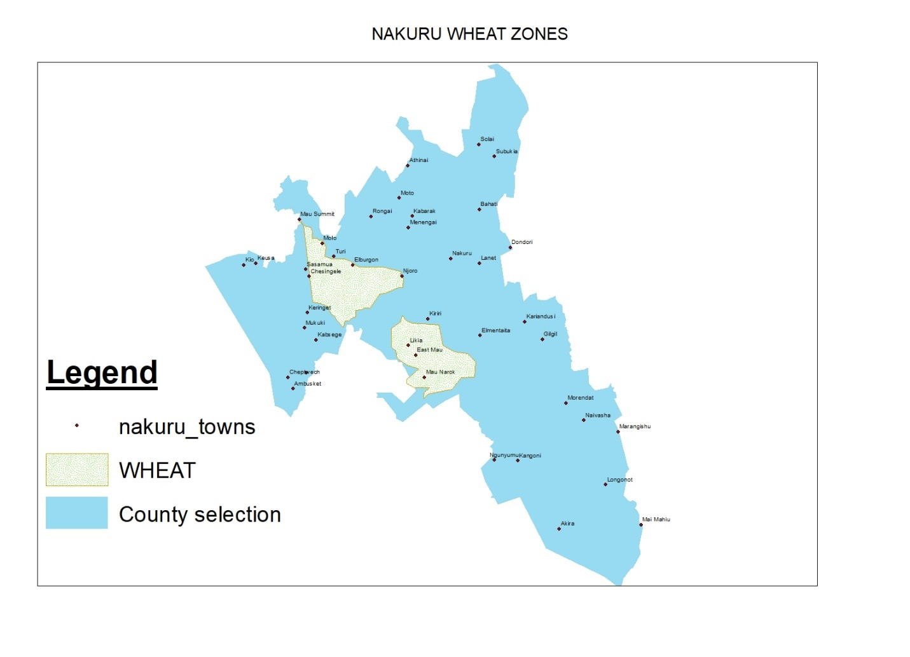
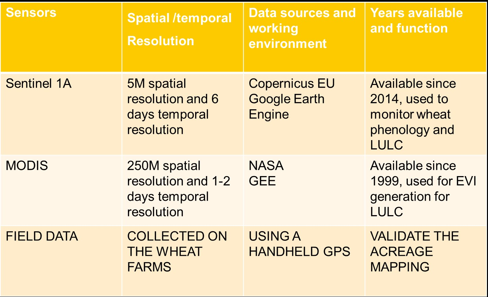
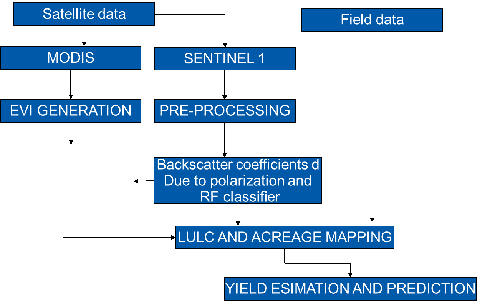

SPATIAL-TEMPORAL ANALYSIS OF WHEAT PRODUCTION AND PREDICTION FOR FOOD SECURITY ENHANCEMENT
INTRODUCTION
Wheat farming in Kenya is an important agricultural activity, particularly in the highland regions with favorable climatic conditions.
Here are some key points about wheat farming in Kenya: Growing Regions: Wheat is mainly cultivated in the Rift Valley, particularly in areas such as Nakuru, Uasin Gishu, Narok, and parts of Bungoma and Trans Nzoia counties. These areas have cool temperatures, well-distributed rainfall, and fertile soils, making them suitable for wheat production.
Varieties: Several wheat varieties are grown in Kenya, including both hard and soft wheat varieties. Popular wheat varieties in Kenya include Robin, Fahari, Eagle 10, and KS Mwamba. These varieties are selected based on their adaptability to local conditions, disease resistance, and yield potential.
Climate Requirements: Wheat is a cool-season crop and requires a temperate climate for optimal growth. The ideal temperature range for wheat cultivation is between 15°C and 22°C. Additionally, wheat requires well-distributed rainfall, with an average of 500-800 mm during the growing season. In areas with lower rainfall, irrigation is practiced to supplement water requirements.
Land Preparation and Planting: Land for wheat farming is prepared by plowing and harrowing to create a fine seedbed. Farmers usually plant wheat using a seed drill or broadcasting method. The planting season varies depending on the region but generally falls between May and July, coinciding with the long rains. Crop Management: Wheat requires careful management throughout its growth cycle. Key crop management practices include weed control, fertilization, disease, and pest management. Farmers apply appropriate herbicides to control weeds, and nutrient requirements are met through the application of fertilizers based on soil tests. Common diseases in wheat include rust, smut, and Fusarium head blight. Harvesting and Post-Harvest Handling: Wheat is ready for harvest approximately 3-4 months after planting, depending on the variety and prevailing weather conditions. Harvesting is done using combine harvesters, which cut and thresh the crop simultaneously. After harvest, the wheat is dried to reduce moisture content and prevent spoilage. Proper storage facilities, such as silos, are used to preserve the quality of the harvested wheat.
PROBLEM STATEMENT
This study will help in solving all these problems by availing sufficient information to the farmer which would assist in market prices.
Managing the diseases at the various phenological stages and availing climate variability data which would help farmers to plan on planting and various procedures.
With a prediction model, farmers can access credit which would assist them to expand their farms and also plan for storage and transportation of the yield.
With a yield estimation, the farmers can manage their production cost effectively to fit within the yield price and ensure that are profitable.
The government under this study can identify the wheat farmers and distribute their resources to the farmers rationally, giving priority to the high yielders in resource allocation and credit
STUDY AREA

DATA AND MATERIAL

METHODOLOGY

EXPECTED RESULTS
1. LANDUSE AND LANDCOVER MAP OF THE NAKURU REGION
2. WHEAT COVERAGE ALONG THE AREAS
3. WHEAT YIELD ESTIMATION MAP
4. PREDICTION STATISTICS MODELS SUCH AS GRAPHS AND CHARTS
5. PREDICTION MAP FOR 10 YEARS